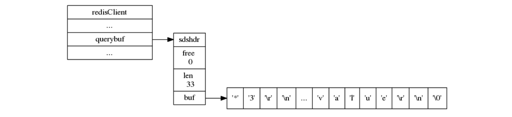
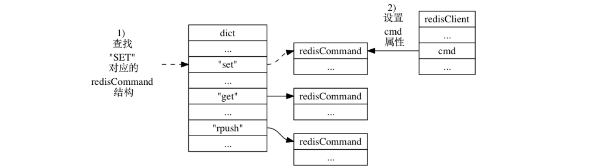

2017-10-16 BoobooWei
客户端分类
普通客户端
使用套接字来与服务器进行通讯，服务器会记录客户端套接字的描述符。
伪客户端
处理的命令请求来源于 AOF 文件或者 Lua 脚本， 而不是网络，这种客户端不需要套接字连接， 也不需要记录套接字描述符。
- 处理 Lua 脚本的伪客户端在服务器初始化时创建， 这个客户端会一直存在， 直到服务器关闭。
- 载入 AOF 文件时使用的伪客户端在载入工作开始时动态创建， 载入工作完毕之后关闭。
客户端属性
对客户端状态中比较通用的那部分属性进行介绍，客户端状态包含的属性可以分为两类：
- 一类是比较通用的属性， 这些属性很少与特定功能相关， 无论客户端执行的是什么工作， 它们都要用到这些属性。
- 另外一类是和特定功能相关的属性， 比如操作数据库时需要用到的
db属性和dictid属性， 执行事务时需要用到的mstate属性， 以及执行 WATCH 命令时需要用到的watched_keys属性， 等等。
创建普通客户端
redis-cli -h <ip> -p <port> -a <password> |
获取客户端属性
命令client list获取客户端属性。
[root@ToBeRoot ~]# redis-cli -p 6380 -a zyadmin |
读懂客户端属性
客户端属性如下表所示：
| 属性 | 值 | 含义 |
|---|---|---|
| id | 16 | 客户端标识 |
| addr | 127.0.0.1:36044 | 客户端的地址和端口 |
| fd | -1 or 大于 -1的整数 | 伪客户端（fake client）载入 AOF 文件并还原数据库状态；执行 Lua 脚本中包含的 Redis 命令。普通客户端的 fd 属性的值为大于 -1 的整数 |
| name | 在默认情况下， 一个连接到服务器的客户端是没有名字的。 | |
| age | 9 | 以秒计算的已连接时长 |
| flags | N | 记录了客户端的角色（role）， 以及客户端目前所处的状态 |
| db | 0 | 该客户端正在使用的数据库 ID |
| sub | 0 | 已订阅频道的数量 |
| multi | -1 | 在事务中被执行的命令数量 |
| qbuf | 0 | 输入缓冲区的大小会根据输入内容动态地缩小或者扩大， 但它的最大大小不能超过 1 GB ， 否则服务器将关闭这个客户端。 |
| qbuf-free | 32768 | 查询缓冲区剩余空间的长度（字节为单位， 0 表示没有剩余空间） |
| obl | 0 | 输出缓冲区的长度（字节为单位， 0 表示没有分配输出缓冲区） |
| oll | 0 | 输出列表包含的对象数量（当输出缓冲区没有剩余空间时，命令回复会以字符串对象的形式被入队到这个队列里） |
| omem | 0 | 输出缓冲区和输出列表占用的内存总量 |
| events | r | 文件描述符事件 |
| cmd | client | 最近一次执行的命令 |
客户端 flag 可以由以下部分组成：
- O ： 客户端是 MONITOR 模式下的附属节点（slave）
- S ： 客户端是一般模式下（normal）的附属节点
- M ： 客户端是主节点（master）
- x ： 客户端正在执行事务
- b ： 客户端正在等待阻塞事件
- i ： 客户端正在等待 VM I/O 操作（已废弃）
- d ： 一个受监视（watched）的键已被修改， EXEC 命令将失败
- c : 在将回复完整地写出之后，关闭链接
- u : 客户端未被阻塞（unblocked）
- A : 尽可能快地关闭连接
- N : 未设置任何 flag
文件描述符事件可以是：
- r : 客户端套接字（在事件 loop 中）是可读的（readable）
- w : 客户端套接字（在事件 loop 中）是可写的（writeable）
设置客户端属性
设置名字
命令client setname 为客户端设置一个名字， 让客户端的身份变得更清晰。
127.0.0.1:6380> client setname test1 |
命令client getname获取客户端名字
127.0.0.1:6380> client getname |
命令client setname ""清空名字
127.0.0.1:6380> client setname "" |
关闭客户端
命令client kill 用于关闭客户端连接。
redis 127.0.0.1:6379> CLIENT KILL ip:port |
阻塞客户端
命令client pause 用于阻塞客户端命令一段时间（以毫秒计）。
redis Client Pause 命令基本语法如下：
redis 127.0.0.1:6379> CLIENT PAUSE timeout |
客户端状态
clients 链表
客户端在服务器状态 clients 属性中的样子:
- 服务器状态结构使用
clients链表连接起多个客户端状态， 新添加的客户端状态会被放到链表的末尾。
输入缓冲区
Redis 客户端的输入缓冲区示例:

- 输入缓冲区记录了客户端发送的命令请求， 这个缓冲区的大小不能超过 1 GB 。
命令与命令参数
Redis 客户端的 argv 属性和 argc 属性示例：
- 命令的参数和参数个数会被记录在客户端状态的
argv和argc属性里面， 而cmd属性则记录了客户端要执行命令的实现函数。 - 在服务器将客户端发送的命令请求保存到客户端状态的
querybuf属性之后， 服务器将对命令请求的内容进行分析， 并将得出的命令参数以及命令参数的个数分别保存到客户端状态的argv属性和argc属性。 argv属性是一个数组， 数组中的每个项都是一个字符串对象： 其中argv[0]是要执行的命令， 而之后的其他项则是传给命令的参数。argc属性则负责记录argv数组的长度。
命令的实现函数
服务器在 argv[0] 为 "SET" 时， 查找命令表并将客户端状态的 cmd 指针指向目标 redisCommand 结构的整个过程如下：

输出缓冲区
执行命令所得的命令回复会被保存在客户端状态的输出缓冲区里面， 每个客户端都有两个输出缓冲区可用， 一个缓冲区的大小是固定的， 另一个缓冲区的大小是可变的：
- 固定大小的缓冲区用于保存那些长度比较小的回复， 比如
OK、简短的字符串值、整数值、错误回复，等等。 - 可变大小的缓冲区用于保存那些长度比较大的回复， 比如一个非常长的字符串值， 一个由很多项组成的列表， 一个包含了很多元素的集合， 等等。
客户端的固定大小缓冲区由 buf 和 bufpos 两个属性组成：
buf是一个大小为REDIS_REPLY_CHUNK_BYTES字节的字节数组，REDIS_REPLY_CHUNK_BYTES常量目前的默认值为16*1024， 也即是说，buf数组的默认大小为 16 KB 。bufpos属性则记录了buf数组目前已使用的字节数量。
使用固定大小缓冲区来保存返回值 +OK\r\n 的例子：
当 buf 数组的空间已经用完， 或者回复因为太大而没办法放进 buf 数组里面时， 服务器就会开始使用可变大小缓冲区。
可变大小缓冲区由
reply链表和一个或多个字符串对象组成。通过使用链表来连接多个字符串对象， 服务器可以为客户端保存一个非常长的命令回复， 而不必受到固定大小缓冲区 16 KB 大小的限制。
包含三个字符串对象的 reply 链表的例子：
输出缓冲区限制
服务器使用两种模式来限制客户端输出缓冲区的大小：
- 硬性限制（hard limit）： 如果输出缓冲区大小超过了硬性限制所设置的大小，那么服务器立刻关闭客户端。
- 软性限制（soft limit）：如果输出缓冲区大小超过了软性限制所设置的大小，但是没有超过硬性限制，那么服务器将使用客户端状态结构的
obuf_soft_limit_reached_time属性记录下客户端到达软性限制的起始时间；之后服务器会继续监视客户端，如果输出缓冲区的大小一直超过软性限制，并且持续时间超过服务器设定的时长，那么服务器将关闭客户端；相反地，如果输出缓冲区的大小在指定时间内，不再超出软性限制，那么客户端就不会被关闭，并且obuf_soft_limit_reached_time会被清零。
限制配置
配置文件中通过client-output-buffer-limit来配置，如下：
client-output-buffer-limit normal 0 0 0 |
不同客户端有不同策略，策略如下：
对于普通客户端来说，限制为0，也就是不限制。因为普通客户端通常采用阻塞式的消息应答模式，何谓阻塞式呢？如：发送请求，等待返回，再发送请求，再等待返回。这种模式下，通常不会导致Redis服务器输出缓冲区的堆积膨胀；
对于Pub/Sub客户端（也就是发布/订阅模式），大小限制是8M，当输出缓冲区超过8M时，会关闭连接。持续性限制是，当客户端缓冲区大小持续60秒超过2M，则关闭客户端连接；
对于slave客户端来说，大小限制是256M，持续性限制是当客户端缓冲区大小持续60秒超过64M，则关闭客户端连接。
上述三种规则都是可以修改的。可以通过CONFIG SET 命令设置或者直接修改redis.conf文件。
上面三个参数可能会出现如下问题 |
身份验证
客户端状态的 authenticated 属性用于记录客户端是否通过了身份验证：
- 如果
authenticated的值为0， 那么表示客户端未通过身份验证； - 如果
authenticated的值为1， 那么表示客户端已经通过了身份验证。
举个例子， 对于一个尚未进行身份验证的客户端来说， 客户端状态的 authenticated 属性将下 所示：
当客户端 authenticated 属性的值为 0 时， 除了 AUTH 命令之外， 客户端发送的所有其他命令都会被服务器拒绝执行： |
authenticated 属性仅在服务器启用了身份验证功能时使用： 如果服务器没有启用身份验证功能的话， 那么即使 authenticated 属性的值为 0（这是默认值）， 服务器也不会拒绝执行客户端发送的命令请求。
时间
客户端还有几个和时间有关的属性：
ctime属性记录了创建客户端的时间， 这个时间可以用来计算客户端与服务器已经连接了多少秒 ——client list命令的age域记录了这个秒数；lastinteraction属性记录了客户端与服务器最后一次进行互动（interaction）的时间， 这里的互动可以是客户端向服务器发送命令请求， 也可以是服务器向客户端发送命令回复——client list命令的idle域记录了这个秒数；obuf_soft_limit_reached_time属性记录了输出缓冲区第一次到达软性限制（soft limit）的时间。
总结
- 服务器状态结构使用
clients链表连接起多个客户端状态， 新添加的客户端状态会被放到链表的末尾。 - 客户端状态的
flags属性使用不同标志来表示客户端的角色， 以及客户端当前所处的状态。 - 输入缓冲区记录了客户端发送的命令请求， 这个缓冲区的大小不能超过 1 GB 。
- 命令的参数和参数个数会被记录在客户端状态的
argv和argc属性里面， 而cmd属性则记录了客户端要执行命令的实现函数。 - 客户端有固定大小缓冲区和可变大小缓冲区两种缓冲区可用， 其中固定大小缓冲区的最大大小为 16 KB ， 而可变大小缓冲区的最大大小不能超过服务器设置的硬性限制值。
- 输出缓冲区限制值有两种， 如果输出缓冲区的大小超过了服务器设置的硬性限制， 那么客户端会被立即关闭； 除此之外， 如果客户端在一定时间内， 一直超过服务器设置的软性限制， 那么客户端也会被关闭。
- 当一个客户端通过网络连接连上服务器时， 服务器会为这个客户端创建相应的客户端状态。 网络连接关闭、 发送了不合协议格式的命令请求、 成为 CLIENT_KILL 命令的目标、 空转时间超时、 输出缓冲区的大小超出限制， 以上这些原因都会造成客户端被关闭。
- 处理 Lua 脚本的伪客户端在服务器初始化时创建， 这个客户端会一直存在， 直到服务器关闭。
- 载入 AOF 文件时使用的伪客户端在载入工作开始时动态创建， 载入工作完毕之后关闭。